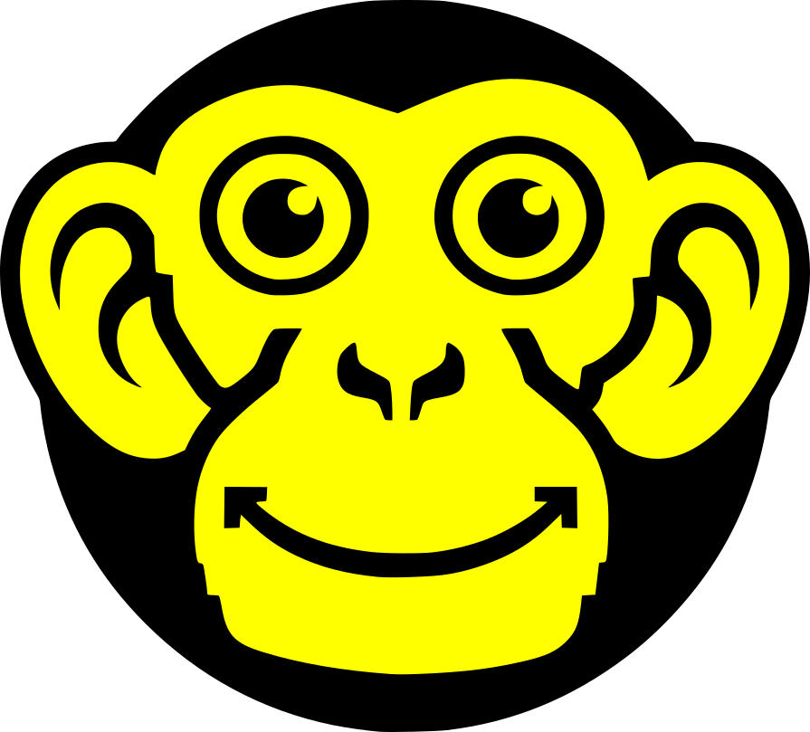

The composition.
The colour decisions.
B’s structure remains the recommendation. Its palette needs a deliberate choice: original olive-tinged neutrals, warmer mineral neutrals aligned with the main logo, or a dark reading field.
Current B / control
The original warm/olive neutrals and slightly greener signal. Kept for comparison.
- Reading
#F5F3ED - Text
#10110F - Evidence
#E9E7DE - Signal
#EFFF00 - Secondary
#5B5D55 - Functional rule
#73776A

THESPOTTEDAPEMORE INTELLIGENCE.
LESS DIRECTION.
We help organisations make consequential decisions, understand human behaviour and navigate the changing relationship between people and AI.
Discuss a decision ↗Explore the practice ↗Find
formation.
Understand the conditions.
Behavioural design investigates existing behaviour, incentives, barriers and the circumstances in which new behaviour emerges.
Selection is a commitment, not a success score. The resource conflict remains unresolved.
Try selecting this sentence: its highlight has a dedicated dark foreground, independent of this panel’s pale text.
Warm mineral B / recommended
Established stone, sand and obsidian neutrals; yellow aligned with the dominant colour in the main monkey asset.
- Reading
#F6F4F0 - Text
#121211 - Evidence
#ECE8E1 - Signal
#FFFF00 - Secondary
#5C5C58 - Functional rule
#77766F
MORE INTELLIGENCE.
LESS DIRECTION.
We help organisations make consequential decisions, understand human behaviour and navigate the changing relationship between people and AI.
Discuss a decision ↗Explore the practice ↗Find
formation.
Understand the conditions.
Behavioural design investigates existing behaviour, incentives, barriers and the circumstances in which new behaviour emerges.
Selection is a commitment, not a success score. The resource conflict remains unresolved.
Try selecting this sentence: its highlight has a dedicated dark foreground, independent of this panel’s pale text.
Dark B / alternative
The same composition on a dark reading field. A comparison option, not an implemented theme switch.
- Reading
#121211 - Text
#F6F4F0 - Evidence
#1D1D1B - Signal
#FFFF00 - Secondary
#BDBBB5 - Functional rule
#77766F
MORE INTELLIGENCE.
LESS DIRECTION.
We help organisations make consequential decisions, understand human behaviour and navigate the changing relationship between people and AI.
Discuss a decision ↗Explore the practice ↗Find
formation.
Understand the conditions.
Behavioural design investigates existing behaviour, incentives, barriers and the circumstances in which new behaviour emerges.
Selection is a commitment, not a success score. The resource conflict remains unresolved.
Try selecting this sentence: its highlight has a dedicated dark foreground, independent of this panel’s pale text.
Recommended:
warm mineral B.
Keep the cream-led reading experience and obsidian Choice. Use the main logo’s yellow sparingly, with warm stone and sand neutrals. Preserve strong functional borders, explicit state labels and a separate selection highlight pair.
Yellow on stone is decorative only. Do not use it alone for focus, an essential relationship or a state change. The original B is retained separately as the control; the main B specimen now uses the selected warm mineral palette.
| Pair | Ratio | Use |
|---|---|---|
| Ink / stone | 17.06:1 | Primary text |
| Ink / yellow | 17.46:1 | Backed commitment |
| Muted text / stone | 6.11:1 | Secondary text |
| Muted text / sand | 5.50:1 | Evidence text |
| Light text / ink | 9.76:1 | Dark-surface secondary text |
| Functional rule / stone | 4.15:1 | Essential boundaries |
| Functional rule / ink | 4.11:1 | Essential boundaries |
| Yellow / stone | 1.02:1 | Decoration only |